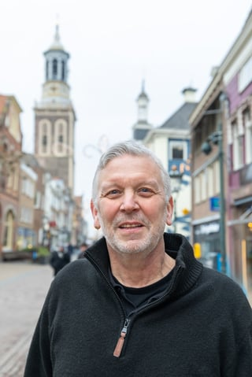
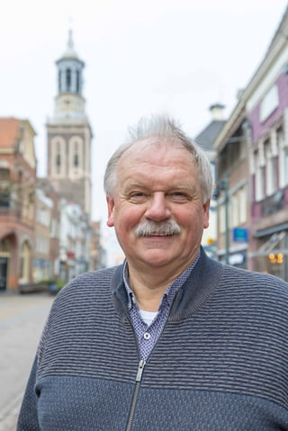
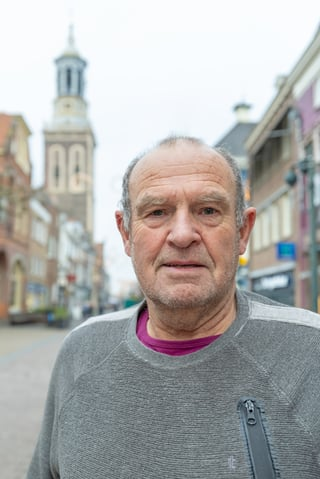

Hart voor Kampen maakt van Kampen de beste plek om te wonen, ondernemen en recreëren. Met transparantie, burgerparticipatie en meer dan 100 jaar politieke ervaring.
Vier pijlers die alles wat wij doen richting geven
Inwoners betrekken bij alles wat in hun leefomgeving gebeurt. Uw stem telt, niet alleen op verkiezingsdag.
Wij zijn voor volstrekte openbaarheid van bestuur. Geen achterkamertjespolitiek, maar open en eerlijk.
Korte lijnen en slagvaardig bestuur voor snelle resultaten. Niet praten, maar doen.
Niet gebonden aan landelijke partijlijnen — puur voor Kampen en al haar kernen.
Waar wij voor staan — voor alle wijken en kernen in de gemeente Kampen
Onafhankelijk, ervaren en puur lokaal sinds 2018
Hart voor Kampen is opgericht in 2018 toen prominente leden van Gemeente Belang Kampen (GBK) — waaronder Nardus Koster, Albert Holtland, Piet Bergstra, Henk Prinsen en Bruno Karel — besloten een eigen koers te varen.
Zij vormden het hart van de oorspronkelijke partij en brachten samen meer dan 100 jaar politieke ervaring mee. Die ervaring zetten we elke dag in voor de inwoners van onze gemeente.
Sinds 7 maart 2022 heeft Hart voor Kampen de ANBI-status, waarmee giften aan onze partij fiscaal aftrekbaar zijn. Bij de verkiezingen van 2022 behaalden wij 2 zetels in de gemeenteraad.
Ervaren en betrokken mensen die zich elke dag inzetten voor u

Ondernemer, 62 jaar, woont in de binnenstad van Kampen. Heeft een winkel op de Oudestraat. Actief in de lokale politiek sinds 2005. Focus: bereikbaarheid, veiligheid en leefbaarheid in de wijken.

Jurist van beroep. Oud-wethouder (2018–2022). 36 jaar ervaring in lokale en provinciale politiek als Statenlid, raadslid, fractievoorzitter, vicevoorzitter van de raad en commissievoorzitter.
Woont in Wilsum. Boerendochter met diverse opleidingen en vaardigheden. Zeer actief in de gemeenschap. Thema's: wonen, werken, cultuur, communicatie en sociale vraagstukken.

Ervaren raadslid en medeoprichter van Hart voor Kampen. Zet zich al jarenlang met passie in voor de belangen van alle inwoners van onze gemeente.
Betrokken Kampenaar met frisse energie. Versterkt het team met zijn kennis, netwerk en drive om Kampen mooier te maken voor alle inwoners.
Concrete resultaten waar wij trots op zijn
Blijf op de hoogte van onze activiteiten en standpunten
Hart voor Kampen verwelkomt Remco van Veen als nieuwe kandidaat op de kieslijst. Met zijn betrokkenheid bij de lokale gemeenschap en frisse blik is hij een waardevolle aanvulling.
De kandidatenlijsten voor de gemeenteraadsverkiezingen zijn officieel vastgesteld. Hart voor Kampen doet mee als lijst 8 met een sterk team.
Tijdens de ledenvergadering is Nardus Koster unaniem naar voren geschoven als lijsttrekker. De volledige kandidatenlijst met twaalf kandidaten is goedgekeurd.
Fractievoorzitter Nardus Koster ontvangt meldingen over mogelijke risico's langs de Burgel en vraagt het college om een structurele veiligheidsinventarisatie.
Terugblik op het afgelopen jaar en vooruitblik op de gemeenteraadsverkiezingen van 2026.
Kritische analyse van de gemeentebegroting en de keuzes die het college maakt.
Over de noodzaak van een duidelijke langetermijnvisie voor de gemeente Kampen.
Reflectie op kansen die de gemeente heeft laten liggen en hoe het beter kan.
Hart voor Kampen is tegen betaald parkeren op zondag. Een kritische blik op de SGP-voorstellen.
Over het belang van betrouwbaarheid en consistentie in het gemeentelijk bestuur.
Kampen is meer dan een plek op de kaart. Het is onze thuis, onze trots, ons hart. En daar zetten wij ons elke dag voor in.
Lokale vertegenwoordiging, korte lijnen, transparantie en burgerparticipatie. Samen maken we Kampen mooier.
Sluit je aan bij een groeiende lokale beweging en draag bij aan de toekomst van Kampen.
Steun onze campagne financieel. Als ANBI-stichting zijn giften aan Hart voor Kampen fiscaal aftrekbaar.
Help mee met flyeren, campagnevoeren en het verspreiden van onze boodschap in uw wijk.
Wij horen graag van u. Of u nu een vraag, idee of klacht heeft — wij staan voor u klaar.